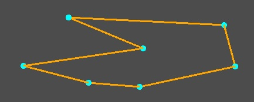

This app draws lines and circle using mouse.
Code
Parent.gd
extends Node2D
func _ready():
print("Size : ", get_viewport_rect().size)
func _input(event):
if event is InputEventMouseButton and event.button_index == BUTTON_LEFT and event.is_pressed():
$MyCanvas.addVertex(event.position)
if event is InputEventMouseButton and event.button_index == BUTTON_RIGHT and event.is_pressed():
$MyCanvas.closeShape()ChildCanvas.gd
extends Node2D
var draw_list = []
var rad = 5
func _ready():
print("Circle1 created")
func closeShape():
if draw_list != []:
draw_list.append(draw_list[0])
update()
func addVertex(pos: Vector2):
draw_list.append(pos)
update()
func _draw():
if draw_list != []:
var temp_draw_list = []
for ob in draw_list:
temp_draw_list.append(ob)
if temp_draw_list != []:
if temp_draw_list != draw_list:
draw_line(
temp_draw_list[temp_draw_list.size() - 1],
draw_list[temp_draw_list.size()],
Color.orange,
2,true
)
draw_circle(draw_list[temp_draw_list.size()],rad,Color.aqua)
Code
Code
Code
Code
Code